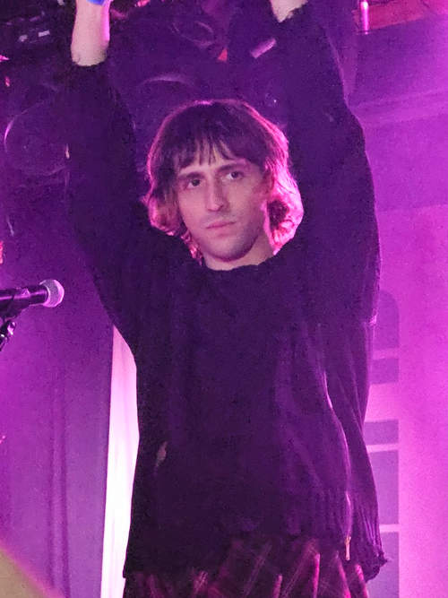

Summary
Porter Weston Robinson (born July 15, 1992) is an American DJ, singer, songwriter, and record producer. Born in Atlanta, Georgia, and raised in Chapel Hill, North Carolina, Robinson began producing electronic music during his adolescence. He signed to Skrillex's record label OWSLA at the age of 18 and released the extended play Spitfire in 2011. He appeared on Billboard's 21 Under 21 list in 2012.[12] Robinson's debut studio album, Worlds, was released in 2014 and peaked at number one on Billboard's Top Dance/Electronic Albums.[13] He won the 2015 MTVU Artist of the Year[14] and made DJ Mag's Top 100 DJs list for seven consecutive years.[15] The album was critically acclaimed and is considered to be a major influence on the broader sound of EDM following its release. At the inaugural Electronic Music Awards in 2017, he was nominated for Single of the Year and Live Act of the Year, both with Madeon, for the single "Shelter" and the Shelter Live Tour, respectively.[16] Robinson began producing music under the alias Virtual Self in 2017, releasing a self-titled EP the same year.[17] It spawned the single "Ghost Voices",[18] which was nominated for the Grammy Award for Best Dance Recording. He released his second studio album Nurture in 2021, which debuted atop Billboard's Top Dance/Electronic Albums and earned him widespread acclaim. Nurture was included on several year-end lists, including topping The Fader's list of the "50 Best Albums of 2021".[19] His third album Smile! :D was released in 2024, supported by a world tour spanning over 70 shows between 2024 and 2025.[20][1].

Early life
Robinson was born in Atlanta, Georgia, and raised in Chapel Hill, North Carolina, where he currently resides. He is the second of four boys in his family (in order: Nick, Porter, Mark, Robert).[21] He was accepted into the University of North Carolina at Chapel Hill, where both of his parents are alumni, but did not attend himself due to his newly launched music career.[22]
Career
2005–2013: Spitfire
Entirely self-taught, Robinson began producing at the age of 12. While posting his early music on online forums, he met future collaborator Madeon, who was using the aliases "Daemon" and "Wayne Mont". From 2005 to 2010, under the alias "Ekowraith", he released "hands up" music via YAWA Recordings.[23] Robinson then began producing music that he called "complextro", adding classically inspired melodies and complicated fills to his music.[24] Starting to release music under his own name in 2010, Robinson released a variety of original singles on Glamara Records and Big Fish Recordings. One of his most notable releases was "Say My Name", which reached number one on Beatport, launching Robinson into the mainstream dance music world.[25] Eighteen at the time, Robinson started achieving international notice, catching the eye of dubstep producer Skrillex.[26] In 2011, he signed a one-EP deal with Owsla, a then-new label operated by Skrillex, to release the eleven-track Spitfire. As the first release on OWSLA, it topped iTunes Dance chart and Beatport's overall chart, crashing the latter's servers upon release.[27][28] Robinson released the single, "Language",[29] on April 10, 2012, through Big Beat Records in North America, and Ministry of Sound everywhere else. The song was relatively different in its production than the "complextro" sound that Robinson had become known for, favoring a more melodic sound and a dream-like piano lead. The song rose to the number one overall chart position on Beatport as well as the iTunes Dance chart.[27] The single was premiered initially via a live BBC Radio 1 Essential Mix on January 27. The music video, directed by Jodeb, was released via Ministry of Sound's YouTube channel on August 1, 2012. The song was also included as the menu music for the 2012 video game Forza Horizon.[30] Throughout the rest of 2012, Robinson embarked on his "Language Tour", supported by artists Mat Zo and the M Machine.[31] Robinson co-wrote Zedd's US top 10 hit "Clarity", as well as singing backing vocals.[32] The track was originally going to be released as a collaboration between the two artists called "Poseidon" alongside a joint tour, but Robinson backed down and withdrew his name because he did not want to release a pop single while he was "trying to do something that wasn't shooting for the radio" with his debut album.[22] On December 17, 2012, a collaborative single with Mat Zo entitled "Easy"[33] was pre-released exclusively on Beatport by Ministry of Sound, and spent two entire weeks as the number one overall song on the Beatport Top 100 chart.[34] The full official release occurred in spring 2013 and was accompanied by an anime music video.[35]
2014–2019: Worlds and Virtual Self
Robinson's debut studio album Worlds was released through Astralwerks and Virgin EMI on August 12, 2014. The album focused more on melodies to invoke a sense of nostalgia, juxtaposing the percussive bass driven tracks he had released previously. Robinson collaborated with multiple vocalists and musical groups including Urban Cone, Lemaitre, Breanne Düren, and Amy Millan. He made his official vocal debut on the single "Sad Machine". The Vocaloid software voice, Avanna, was also used as a vocalist for this single.[36] Robinson then embarked on the Worlds Live tour, a new live show that involved him singing, playing synthesizers, and triggering samples, supported by artists Giraffage and Lemaitre.[37] The tour headlined popular music festivals, including Ultra Music Festival, Electric Daisy Carnival, and Coachella.[38][39][40] A remix album of Worlds titled Worlds Remixed was released on October 2, 2015. It included remixes by electronic artists Odesza, San Holo, Mat Zo, Electric Mantis, Galimatias, Last Island, Chrome Sparks, Deon Custom, Rob Mayth, Point Point, Sleepy Tom, and Slumberjack.[41] On January 31, 2016, Robinson announced on his Twitter account that he was producing new material after being "stuck" for a year and a half. On August 11, he released "Shelter", a collaboration with fellow musician and friend Hugo Leclercq, better known by his stage name Madeon.[42] An animated music video was released for "Shelter" on October 18, animated by A-1 Pictures and jointly produced by Robinson, A-1 Pictures, and Crunchyroll.[43] Robinson and Leclercq then embarked on a nearly year-long joint international tour dubbed the "Shelter Live Tour", where the two performed live shows onstage together, with supporting acts from Danger, Robotaki, and San Holo.[44] On October 25, 2017, Robinson released a new single titled "Eon Break" under the alias Virtual Self, announced via his Twitter page.[45] A music video was also released on Robinson's YouTube channel, containing abstract three-dimensional art and cryptic messages seemingly focusing on the words "angel", "virtual", "void", and "utopia".[46] His follow up single was released on November 8, 2017, which is titled "Ghost Voices".[47][48] An accompanying music video for the track was released on February 28, 2018, via Robinson's YouTube channel. In January 2019, it was announced that "Ghost Voices" was nominated for a Grammy Award for Best Dance Recording, marking Robinson's first nomination.[18] Robinson celebrated the accomplishment by playing three Virtual Self sets in Los Angeles before the awards ceremony.[49][50][51] In a statement to Billboard Dance, Robinson says he discovered the nomination through Twitter "of all places". At the time, he hadn't even realized "Ghost Voices" was submitted for consideration.[52] Robinson performing as Virtual Self in Brooklyn, New York, on December 8, 2017 Virtual Self released a self-titled EP on November 29, 2017.[17] He held a debut live performance on December 8, 2017, in Brooklyn, New York City.[53] Virtual Self shows continued in 2018, with appearances at multiple festivals including Ultra Music Festival, Electric Daisy Carnival, and Bonnaroo, followed by three Europe shows[54] and a two-month North American "UTOPiA SySTEM" tour.[55] Robinson also released "Angel Voices" on July 20, 2018, a happy-hardcore infused remix of "Ghost Voices".[56] On March 4, 2019, Robinson announced Multiverse Music Festival, a one-day festival in Oakland, California, featuring a self-curated lineup and co-presented by Goldenvoice, slated for June 15 in Middle Harbor Shoreline Park.[57] The name of the festival was changed to Second Sky Music Festival four days later due to complaints from local promoters that had organized a fest in Oakland with a similar name the previous year.[58] A second day was added during presale due to tickets for the original date selling out rapidly, sharing all but one act from the first day's lineup.[59] Robinson stated in an interview with Pollstar that "The main reason I wanted to do an artist-curated festival is I have this fantasy of there being a place where all of my favorite music can coexist."[60] Shortly after announcing Second Sky's lineup, Robinson announced another Virtual Self show,[61] a series of six DJ sets under his own name,[62] and later, two more Virtual Self appearances.[63][64] In June 2019, Robinson started The Robinson Malawi Fund after his brother Mark beat cancer.[65][66] The organization donated $154,000 for patients with Burkitt Lymphoma in Malawi using money raised by the Second Sky Music Festival and matched donations from Robinson.[67]
2020–2023: Nurture
On January 28, 2020, Robinson's social media announced his second album, Nurture, and the release of the first single, "Get Your Wish", with a music video, for January 29, 2020, along with a 52-second teaser.[68] The song features vocals that are artificially pitched up to sound childlike, an effect found in numerous songs in the full album.[69] On March 10, 2020, Robinson released the second single on his album, titled "Something Comforting". A music video was released on March 25, 2020. In an interview, Robinson states that the song began at the peak of his creative drought and depression in 2015 and 2016, and that this was the first song he knew he liked and wanted to keep on the album.[70] On May 9, 2020, Robinson teamed up with the Recording Academy,[71] and donated $115,000 to MusiCares COVID-19 Relief Fund using money raised by his online Secret Sky Music Festival.[72] During the event, he unveiled a new song from his upcoming album, "Look at the Sky". The song was later announced to be the fourth single from Nurture.[73] On July 14, 2020, one day before his twenty-eighth birthday, Robinson announced that Nurture was on hold, but the album's rollout would resume the following day.[74] The next day, the Anamanaguchi remix of "Get Your Wish" was released,[75] and a week later, he released his own remix under the name DJ Not Porter Robinson.[76] On August 12, 2020, the sixth anniversary of the release of his Worlds album, Robinson uploaded a live edit of his song "Shepherdess", which was played during his Worlds Live shows. Additionally, he announced that on the tenth anniversary of the album's release, the song "Hollowheart" will be released. The song was supposed to be on the Worlds album but was submitted too late.[77] On August 26, 2020, Robinson released "Mirror", the third single from Nurture.[78] A music video was uploaded to YouTube on September 9, 2020.[79] On December 18, 2020, Robinson announced that Nurture was fully completed, and that the album would release in "a few months". Roughly a month later, he announced that his fourth single, "Look at the Sky" would be released on January 27, 2021. That day, Robinson announced that Nurture would be released on April 23, 2021.[80] Two weeks later, a music video for "Look at the Sky" debuted on Robinson's YouTube channel. On February 26, 2021, Robinson announced on his Twitter that the fifth single for the 14-song album, "Musician", would be released on March 3. Attached to his tweet was an audio and visual preview of the song and its music video.[81] In a press release, Robinson explained what the song meant to him, "It was one of the last songs that I wrote for the album, and it's honestly a celebration of the album itself".[82] An anime styled music video was released soon after.[83] On March 17, 2021, a deluxe version of Nurture was detailed to be releasing exclusively in Japan, featuring a bonus song with the Japanese band Wednesday Campanella.[84] On April 22, 2021, one day before the release of Nurture, Robinson released the sixth and final single from the album, "Unfold" with TEED.[85] On April 23, 2021, Nurture was released. The album would be placed on year-end lists such as Billboard's "Best Albums of 2021".[86] On April 24, 2021, during his own virtual music festival Secret Sky, Robinson premiered the Nurture live show.[87] On May 10, 2021, Robinson announced the tour for the Nurture live show, supporting Nurture.[88] Robinson continued to be active after the release of Nurture. On September 8, 2021, Robinson announced a new side project called Air2Earth, a live-only project focusing on "sample-driven, tranquil proghouse and airy disco."[89][4] Robinson premiered Air to Earth at his annual Second Sky music festival in Oakland, California, on September 19, 2021.[90] The following year, on July 14, 2022, Robinson released a new single titled "Everything Goes On", in collaboration with video game League of Legends. "Everything Goes On" marks Robinson's first release since Nurture and was released alongside a music video as a part of the Star Guardian 2022 event in League of Legends.[91] Robinson's songs "Look at the Sky" and "Something Comforting" were added to the arcade game Dance Dance Revolution A3 as playable songs on November 4, 2022, marking his debut in the Dance Dance Revolution series, which Robinson has cited as a major influence in his career.[92] On February 13, 2023, the songs "Musician" and "Eon Break" were also added into Dance Dance Revolution A3. On February 17, 2023, Robinson's collaborative track with Skrillex and Bibi Bourelly, "Still Here (With the Ones That I Came With)", released on Skrillex's second studio album, Quest for Fire.[93] On March 7, 2023, Robinson released a Vocaloid 6 voicebank named Po-uta which imitates his pitched-up vocals from Nurture.[94] Robinson also released "Humansongs" as a showcase demo for Po-uta.[95]
2024–present: Smile!
On February 29, 2024, Robinson released a video teaser for a new project, where a fictional video essayist from 2028 details how Robinson would go on to delete his entire discography from the internet and then disappear on March 1, 2024.[96] A brief snippet of new music was included at the end, and a countdown to March 1 started on Robinson's website.[96] After the countdown, it was revealed that Robinson's next album was finished.[97] On March 20, Robinson released the album's lead single, "Cheerleader" alongside a music video.[98] On April 22, Robinson teased the second single, "Knock Yourself Out XD" on social media. It released alongside a music video on April 24.[99] On April 23, Robinson announced that the album would be titled Smile! :D and that it would be released on July 26.[100] Two days later, on April 25, he announced a world tour after the release of Smile! :D beginning August 2024, marking Robinson's first world tour.[101] The world tour featured special guests, with Ericdoa on all North American shows, Galileo Galilei on the Tokyo and Osaka shows, Ninajirachi on all Australian shows,[102] and Underscores on all European shows. On June 5, 2024, Robinson released the third single of the album, "Russian Roulette".[103] Robinson sees the song as a path to addressing the ideas of "oblivion, of career suicide, of disappearing", and finding a balance with his obligations. A lyric video for the song was published on June 13, 2024.[104] On July 19, Robinson released the fourth single of the album, "Kitsune Maison Freestyle".[105] Before the release, Robinson announced a pop up event on July 18, where he gave away clothes for free to fans in Los Angeles.[106] Smile! :D was released on July 26, 2024. According to Robinson, the album is "reckoning with the downsides of fame".[107] A music video for the song "Easier to Love You" from Smile! :D was released on August 1, 2024.[108] On August 12, 2024, the tenth anniversary of the release of Worlds, Robinson released his song "Hollowheart" and announced a new tenth anniversary release of the album, as well as a live album based on his performance at his Second Sky Music Festival in 2019.[109] On February 13, 2025, Robinson appeared on triple J's Like a Version segment, where Robinson with his live band performed "Cheerleader" and a cover of Fontaines D.C.'s "Favourite".[110] On May 1, 2025, "Cheerleader" and "Knock Yourself Out XD" were added to Dance Dance Revolution World as playable songs.[111] On July 25, 2025, Michael Clifford released the song "Kill Me for Always", which Robinson features on.[112] On April 10, 2026, Robinson made a surprise appearance during Ninajirachi's performance at Coachella to debut a new collaboration between the two, titled "WannaCry".[113] "WannaCry" was released on July 29, 2026.[114] On September 17, 2026, Smile! :D Plus+, a remix album of Smile! :D was announced, including features from Ninajirachi, and Underscores, among others.[115]
Artistry
Robinson's early influences include video game music, in particular, Dance Dance Revolution. He is a major fan of anime and Japanese culture, and incorporates these elements into his music.[116][117] He has stated that he originally attempted to emulate the music that he heard in Japanese games, which stemmed to producing, and then to performing as a DJ.[118] During his Language Tour, Robinson continually began to grow tired of the current dance music scene, centered around formulaic songs with timed builds and beat drops, designed to excite people at festivals and clubs.[119] Robinson stated, "The more I forced myself to work within those DJ-friendly limits, the more I resented the genre."[120] He then spent the next year or so working on a new album and live show, of which he stated, "...when I do change the style of my show into the live thing I'm going to do later this year, I want the shift in focus to be clear."[119] Robinson did not release or produce any new music in 2015 due to his depression,[121] which he later reflected on in his second studio-album, Nurture. He explained that the lyrics in Nurture were about his struggle to create and be proud of the music he was writing, due to having depression.[122] In a letter to his fans, he detailed how he used to struggle with writing music, and how he overcame that struggle. "I realized I shouldn't write music with the expectation that the productivity or achievement will fix my problems, but instead with the hope that my honest expression will move people the way music moves me. So when I was really struggling to write and it seemed impossible, instead of thinking, 'You're struggling because you're a fraud, you're clearly not cut out for this,' I began to tell myself, 'Yeah, this is what you sacrifice.'"[123] He has been a regular visitor of the Akihabara nightclub Mogra when in Tokyo, which has specialized in featuring anime and video game music. A "Shelter"-themed stage curated by the club was featured at Second Sky Festival in 2022.[124][125]
Personal life
Robinson has been in a relationship with Rika Robinson[126] since 2017.[127] They announced their engagement on January 2, 2022,[128][129] and married on May 7, 2023.[130] He has stated that he is close friends with fellow DJs and record producers Madeon and Dillon Francis.[131] Robinson has Sprengel's deformity and has stated that it has led to him having poor posture.[132] As a child, he was diagnosed with obsessive–compulsive disorder.[133]
Discography
Main articles: Porter Robinson discography and List of songs recorded by Porter Robinson
| Title | Year | Notes |
|---|---|---|
| Worlds | 2014 | Debut album; No. 1, Billboard Dance/Electronic Albums |
| Nurture | 2021 | No. 1, Billboard Dance/Electronic Albums; topped The Fader's 2021 year-end list |
| Smile! :D | 2024 | Third studio album, supported by a 70+ date world tour |
Tours
- Language Tour (2012)
- Worlds Tour (2014–2015)
- Shelter Live Tour, with Madeon (2016; 43 dates across four continents)
- Nurture Live Tour (2021; highest-grossing electronic tour of that year)
- Smile! World Tour (2024–2025; 70+ shows across 20 countries and 5 continents)

Awards and nominations
| Year | Award | Result |
|---|---|---|
| 2015 | mtvU Woodie Awards – Artist of the Year | Won |
| 2015–2021 | DJ Mag Top 100 DJs | Ranked, seven consecutive years |
| 2017 | Electronic Music Awards – Single of the Year ("Shelter," with Madeon) | Nominated |
| 2017 | Electronic Music Awards – Live Act of the Year (Shelter Live Tour, with Madeon) | Nominated |
| 2018 | Grammy Award – Best Dance Recording ("Ghost Voices," as Virtual Self) | Nominated |
| 2021 | The Fader – 50 Best Albums of 2021 (Nurture) | Ranked No. 1 |